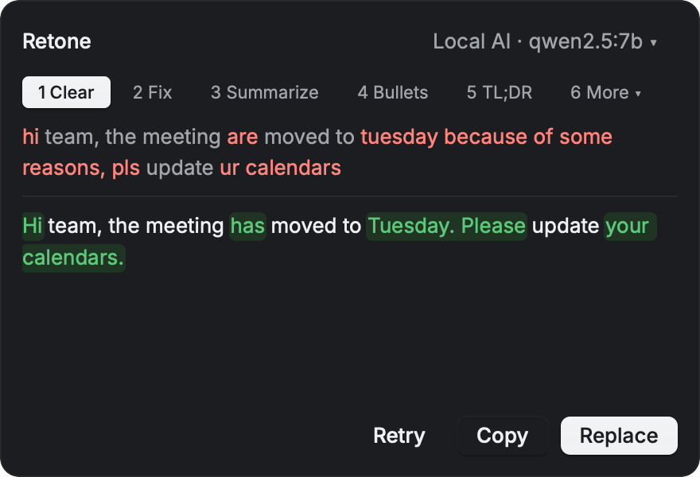
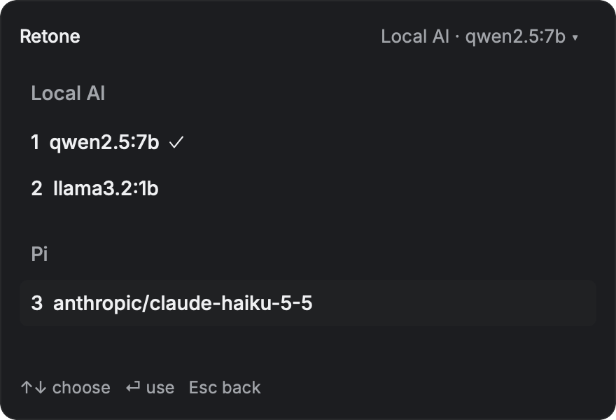
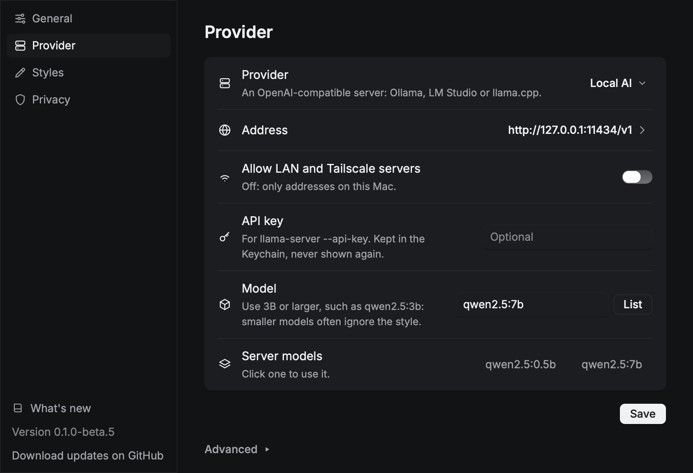
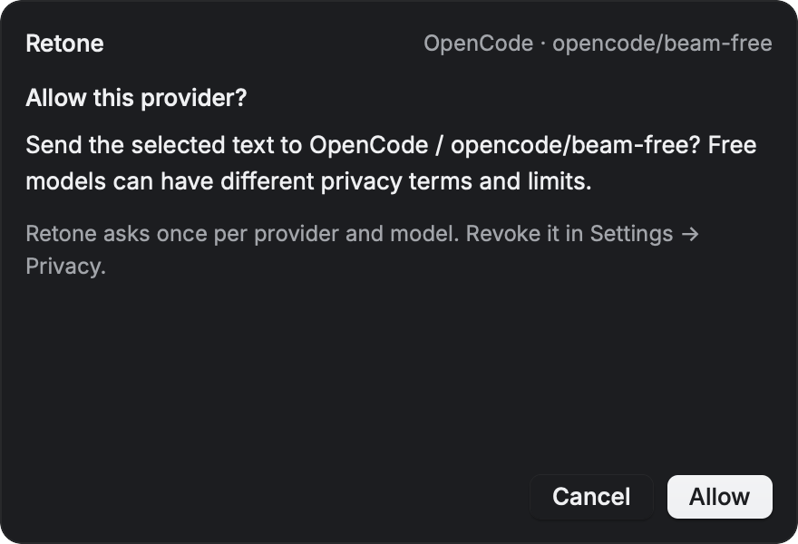

Your hotkey, your way
Record a shortcut and Retone tests it with you. Optional style shortcuts open the popup directly in that style.
Free · Open source · macOS 14+
Select text in any app, press your hotkey, pick a style, and replace the rewrite in place. Retone uses the local model or AI CLI you already run — and keeps no history.
Version 0.1 is a beta for Apple Silicon. It is ad-hoc signed — see the first-launch note.
View the source on GitHub
Preview first. Nothing changes until you press Replace.
How it works
Retone stays out of the way until you need it. The popup opens beside your text.
Highlight text in the app you are already using. Up to 2,000 characters at a time.
You choose the shortcut in Settings. There is no default, so it will not clash with your setup.
Clear, Fix, Summarize, Bullets and TL;DR on keys 1–5. Concise, Professional, Technical, Simplify, Expand and your own style are behind More.
Enter replaces the selection, ⌘C copies it, ⌘R asks for a different version, and Esc cancels with nothing changed.
Features
Record a shortcut and Retone tests it with you. Optional style shortcuts open the popup directly in that style.
Switch tones and actions with a number key, or write your own instruction. The popup streams the rewrite as it arrives.
Highlights show what changed. Copy, Replace, Retry and Cancel are always one key away. If a rewrite fails, the popup says how to fix it and offers another style, another model or Settings.
Retone writes only if the same app, field and selection are still there. On failure or cancel, nothing changes and your clipboard comes back.
Use Ollama, LM Studio, llama.cpp or Llama.app on this Mac — or Pi, OpenCode, Claude Code and Codex. Switch provider from the popup with ⌘P.
No text in logs or settings, a 2,000-character input limit, and consent per provider and model. Themes include System, Dark, Light and Kanagawa Lotus.
A closer look



Privacy
Good writing tools should not quietly keep what you wrote. Retone sends the selection only to the provider you chose, then lets it go.
Read the no-history rulesSelected and rewritten text is never written to disk, logs, preferences or crash output.
Retone asks before the first send to a provider and model, or a new local host.
Text goes on stdin, in a 0700 temporary folder, with sessions, tools and history disabled. A file-write guard switches a provider off if it writes data.
When Retone uses ⌘C to read a selection, it puts your clipboard back afterwards and marks its own paste as transient.
Providers
One app, five ways to rewrite. Local addresses are limited to this Mac by default; LAN and Tailscale need an opt-in.
Ollama, LM Studio, llama.cpp or Llama.app over OpenAI-compatible /v1/chat/completions. Optional API key in the macOS Keychain. Settings recommends three small models that passed Retone's style checks.
Runs with no session, no tools, no extensions and no context files; text arrives on stdin.
Runs with an in-memory database and private temporary folders that Retone deletes after each rewrite.
Runs without session persistence, tools, hooks or skills, and skips prompt history.
Runs in a read-only sandbox with an ephemeral folder. Retone refuses versions it has not verified for no-history use.
Select text and use the Retone menu: Fix Spelling and Grammar, Improve Writing, Summarize, Bullet Points or TL;DR. The popup opens with a preview.
Install
macOS 14 or later on Apple Silicon, plus one AI provider. Free and MIT-licensed.
Needs a current Homebrew. Run brew update first if brew trust is unknown.
brew tap jellydn/retone https://github.com/jellydn/retone
brew trust --cask jellydn/retone/retone
brew install --cask retoneUpdate with brew upgrade --cask retone. Homebrew installs do not update themselves.
Get the DMG or ZIP from Releases. Betas are marked Pre-release.
Open ReleasesOptional: download SHA256SUMS to the same folder and check the file with shasum -a 256 -c SHA256SUMS --ignore-missing.
Retone is ad-hoc signed, not signed with an Apple Developer certificate. macOS may say it cannot be opened.
Open System Settings → Privacy & Security → Open Anyway, or run xattr -dr com.apple.quarantine /Applications/Retone.app.
Grant Accessibility in System Settings to replace text in place. Without it, Retone works in clipboard mode. Re-grant the permission after an update.
Troubleshooting guide →Beta note: tested on macOS 27 with Apple Silicon, mainly in Slack. Other apps, macOS 14/15, Intel Macs, mixed-scaling displays and non-US keyboards are not verified yet.
FAQ
Yes, in clipboard mode. Copy the text first with ⌘C, then press your shortcut. Retone copies the rewrite back to the clipboard and never pastes. Grant Accessibility in System Settings to replace text in place.
A local OpenAI-compatible server such as Ollama, LM Studio, llama.cpp or Llama.app, plus Pi, OpenCode, Claude Code and Codex. Retone asks for consent the first time it sends text to a provider and model.
No. Retone keeps no history: selected and rewritten text is not written to disk, logs or settings. The input limit is 2,000 characters. A clipboard manager in another app may still store a copy made with ⌘C.
Retone is ad-hoc signed, not signed with an Apple Developer certificate. Open System Settings → Privacy & Security, then click Open Anyway. You can also remove the quarantine attribute with xattr -dr com.apple.quarantine /Applications/Retone.app.
macOS 14 or later on Apple Silicon and one AI provider: a local OpenAI-compatible server or one of the supported AI CLIs. Version 0.1 is a beta tested mainly on macOS 27 with Slack; other apps and macOS versions are not yet verified.
Free, open source, and yours to check.